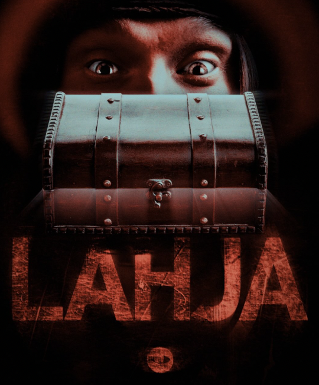
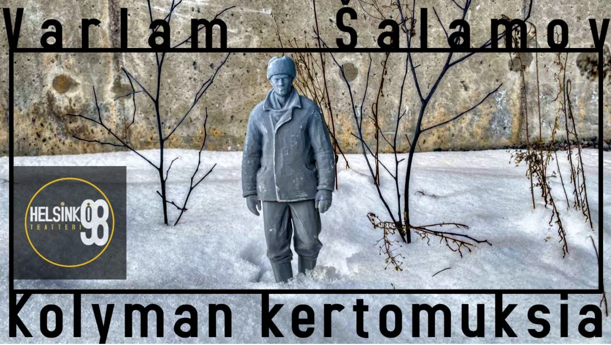
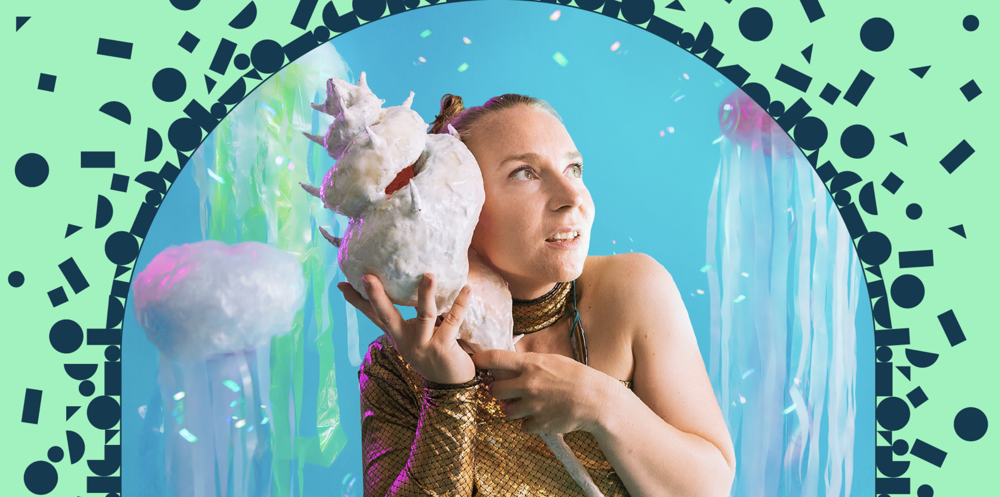

Lahja
Keväällä 2026 Kivelä toimi äänisuunnittelijana, musiikintekijänä sekä näyttelijänä Lahja-lyhytelokuvassa, joka osallistui Uneton48-lyhytelokuvakilpailuun. Elokuva voitti yleisön suosikki -palkinnon, ja Kivelälle myönnettiin parhaan äänen palkinto.

Kolyman kertomuksia
Kolyman kertomuksia on yksi 1900-luvun merkittävimmistä GULAG-kirjallisuuden teoksista. Sen kirjoittaja, Varlam Šalamov, vietti lähes kaksi vuosikymmentä Neuvostoliiton pakkotyöleireillä Koillis-Siperiassa, Kolymassa, missä pakkanen laskee –50 asteeseen. Näistä kokemuksista syntyi tiheä, pelkistetty ja armoton proosa, teos joka ei selitä eikä moralisoi. Se todistaa. Kivelä teki esitykseen musiikin ja äänisuunnittelun.

Salainen Saari
Salainen saari on kutkuttava kertomus salaperäisen maailman tutkimisesta, löytämisen ilosta sekä siitä, miten voimme löytää uusia ystäviä yllättävistä paikoista, kun vain olemme avoimia seikkailulle. Recover Laboratoryn Salainen saari avaa Cirkon uuden lapsille ja aikuisille suunnatun CirkOtus-ohjelmakokonaisuuden, jossa hauskuus on taattu! Kivelä teki esitykseen musiikin ja äänisuunnittelun.
